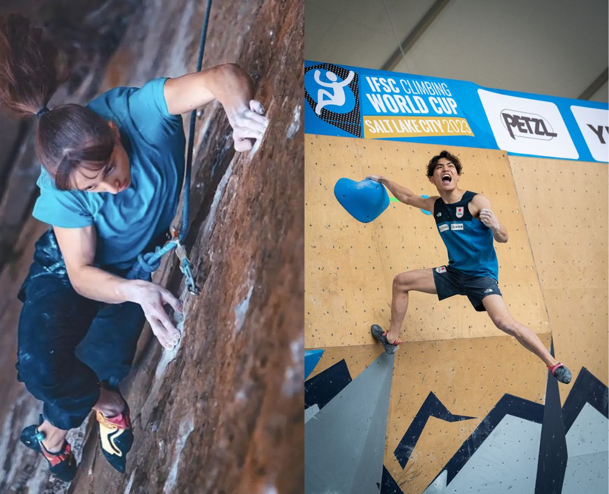

My name is Dominic and I enjoy sports. At a younger age I started playing tennis and I was quite successful, later I started climbing which is my favourtie hobby since I have started. I climb more than four times a week. I also climb at competitions and am training to be on team Canada for the U16 age category.
My second hobby is solving the Rubiks Cube which is a puzzle created in the 1900's, there are different variations of it, one of them is the 3x3 cube, which also is the one I excell most in, In one competition I even got second place and won a magnified rubiks cube. I have been cubing for about 5 months and and is fun when I am bored or just have nothing to do.
I have also created my own website before where I have profited from, this is it:
Friendbonus

I chose this course because of the fast evolving world around technology and I think that it will help me understand the digital workd better. Another factor is my Parents, one of them used to work in IT with google and made multiple startups himself. He has tought me a few things alredy, bought books for me and many other things. One of my difficulties so far has always been to stay consistant with coding, I started multiple times but always stopped after a week or two, thats why I think this course could help me stay with coding for longer.
I have learnt about Game Maker and how to create a simple game with it, I have also learnt about a few simple Tags for HTML.
I, Dominic, fully acknowledge that all homepage files must be renamed to index.html. I have tested this website on https://tinyurl.com/cst10sites and will also do so with upcoming assignments. My code has been checked on Validator and has been corrected. Failure to do so will result in a severe loss of marks.